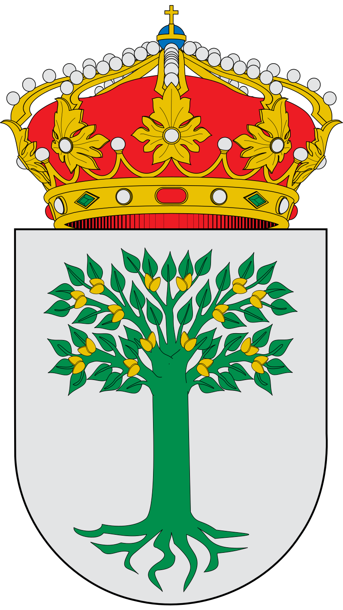

Datos estadísticos

Almendralejo, Badajoz: Una Ciudad de Tradición y Desarrollo
Almendralejo es una ciudad destacada en la provincia de Badajoz, conocida por su riqueza cultural y su importancia en la economía agrícola de Extremadura. Popularmente llamada la "Ciudad Internacional del Vino", combina tradición, desarrollo y sostenibilidad.
Demografía
- Población total: Según los datos más recientes, Almendralejo tiene 33,669 habitantes, con 16,636 hombres y 17,033 mujeres.
- Crecimiento poblacional: La estabilidad de su población refleja su capacidad de mantener un entorno atractivo para residentes y visitantes.
Economía
- Sector agrícola: Almendralejo es un referente en la producción de vino y aceite de oliva, con especial reconocimiento en la Denominación de Origen Ribera del Guadiana.
- Empresas: La mayoría de las actividades económicas giran en torno a la agroindustria, aunque el sector servicios y el turismo también tienen un peso significativo en la economía local.
Cultura y Educación
- La ciudad es un centro cultural con eventos relacionados con su tradición vinícola, como ferias y exposiciones, que promueven su identidad y fortalecen el turismo.
- Los centros educativos apoyan actividades culturales y fomentan el desarrollo personal y profesional de los jóvenes de la región.